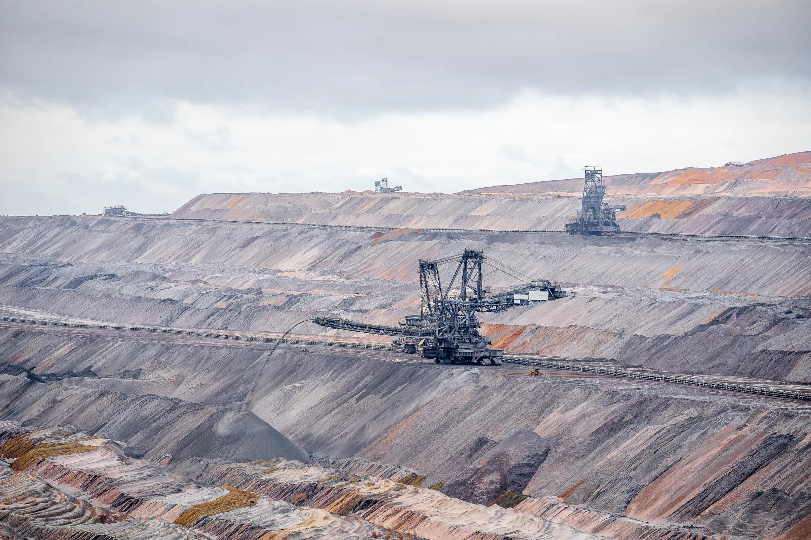
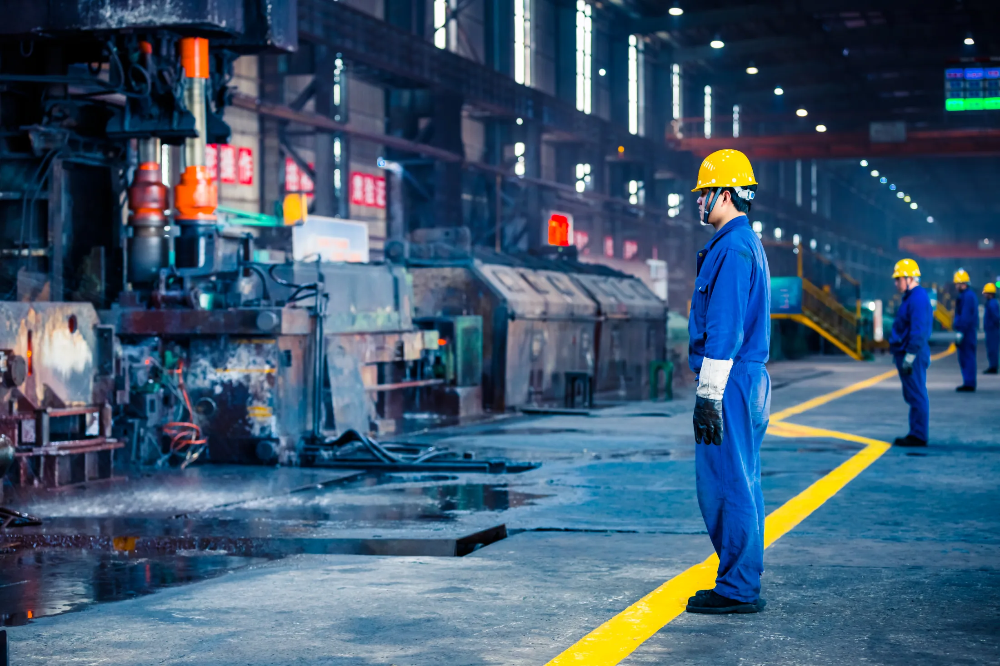
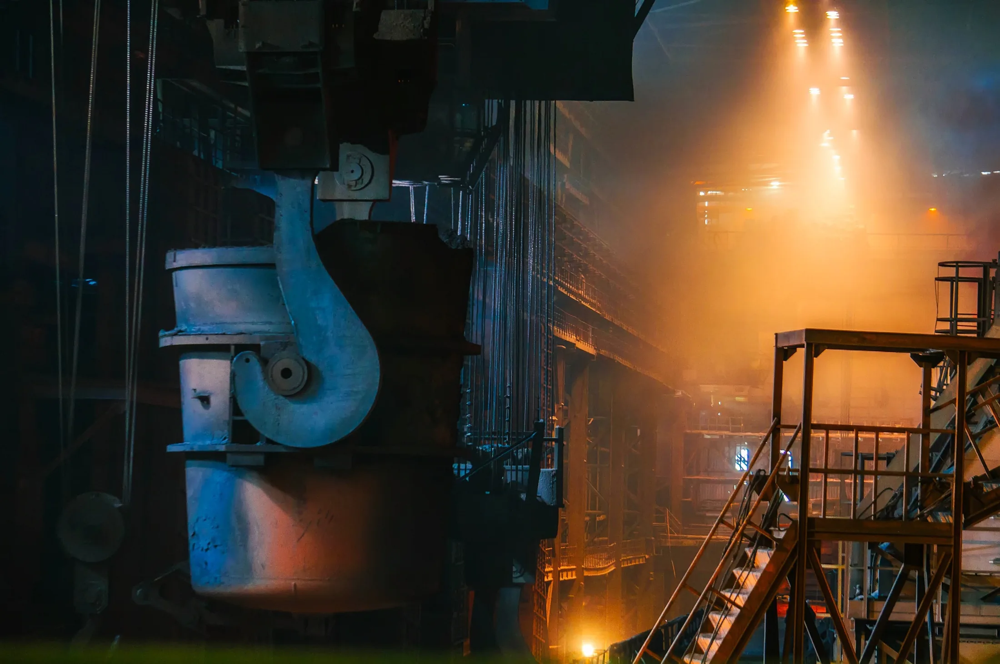

When I ask people what the world's most recycled material is, the answers are almost always the same—plastic, paper, maybe even rubber. Very few guess the correct answer: steel. It is one of the most fascinating engineering stories ever written, yet most of us never get to witness it. We see steel in bridges, skyscrapers, cars, railway tracks, ships, and even our kitchen appliances, but rarely do we stop to wonder how ordinary rocks buried deep beneath the Earth become the backbone of modern civilization. So, let me take you on that journey.

Every piece of steel begins its life hundreds of meters below the Earth's surface. Massive excavators and mining equipment dig out four essential ingredients: iron ore, coal, limestone, and dolomite. Once extracted, these raw materials begin another journey—this time aboard trucks and railway wagons headed toward an integrated steel plant. As the trains arrive at the plant, the raw materials are carefully unloaded and separated. Coal is stored in one stockyard, iron ore in another, while limestone and dolomite make their way to the flux house. It may look like organized storage, but in reality this is the first step of an enormous manufacturing process where every material has a carefully planned role to play.
The first challenge appears almost immediately. Unlike countries blessed with abundant high-grade iron ore, much of India's iron ore is available as fine powder rather than large lumps, and a blast furnace cannot simply consume this dust. Engineers solve this problem in ingenious ways: some of the iron ore fines are converted into sinter, where the ore is mixed with coke breeze and fluxes before being heated into a porous, stone-like material. Another portion becomes pellets—inside giant rotating discs, water and binders help the fine particles roll into small spherical balls that are later hardened by heat. The remaining larger lumps of iron ore require little processing and can be used directly. By this stage, the iron ore is finally ready.
Next comes coal, another material that refuses to cooperate so easily. Much of the coal available in India isn't suitable for steelmaking in its natural form, so it must undergo a remarkable transformation called coking. Inside huge coke ovens, the coal is heated to extremely high temperatures in the complete absence of oxygen. Because there is no air, it doesn't burn—instead, moisture and volatile compounds are driven off, leaving behind a hard, porous, carbon-rich material known simply as coke. Even here, nothing is wasted: the gases released during coking possess a high calorific value and are collected to fuel other furnaces across the steel plant, making the entire process more energy-efficient.
Now, with iron ore prepared and coke ready, we arrive at the heart of ironmaking—the blast furnace. Standing several stories tall, the blast furnace is where chemistry and engineering come together in spectacular fashion. Layers of iron ore, coke, limestone, and dolomite are charged from the top, while a powerful blast of preheated air enters through the bottom. Inside, temperatures soar beyond 2,000°C. The coke burns, producing both the heat and the carbon monoxide needed for the next crucial step. Iron ore is not pure iron—it is iron chemically bonded with oxygen, and simply melting it would achieve nothing. That oxygen has to be removed.

As the burden slowly descends through the furnace over the next two to three days, carbon monoxide strips oxygen away from the iron ore in a series of reduction reactions. The newly liberated iron melts and gradually trickles toward the bottom of the furnace. It is difficult not to admire the scale of this process: the raw materials charged into the furnace today will not emerge until several days later as a glowing river of molten iron. This liquid is known by several names—hot metal, molten iron, or simply liquid iron—but regardless of the name, it represents the successful completion of the first half of steelmaking. The molten iron is tapped into enormous insulated vessels called torpedo ladles, which transport it to the next stage: the Steel Melting Shop. Sometimes, however, the blast furnace produces more hot metal than the steel plant can immediately consume. Since shutting down a blast furnace is neither practical nor economical, the excess iron is rapidly cooled by atomizing it into water, forming small metallic pellets known as granshots—chemically nothing more than pelletized pig iron, ready to be stored or sold until needed.
Inside the Steel Melting Shop stands another engineering marvel—the Basic Oxygen Furnace, or BOF. Despite its intimidating name, its purpose is surprisingly straightforward: transform molten iron into steel. The iron arriving from the blast furnace still contains far too much carbon; in fact, it resembles cast iron more than steel. To remove this excess carbon, pure oxygen is blown into the molten bath at extremely high speed.

Almost instantly, oxygen reacts with carbon to form carbon monoxide and carbon dioxide, which escape from the molten metal. At the same time, argon gas is bubbled through the bath to stir the liquid steel and help remove dissolved gases and impurities. Within barely fifteen minutes, the chemistry changes dramatically: what entered the furnace as carbon-rich hot metal now becomes steel, with its carbon content adjusted to suit the desired grade. But precision matters—every customer demands steel with a different chemical composition. Some grades require chromium for corrosion resistance, vanadium for strength, titanium for grain refinement, or several other alloying elements depending on the final application. This is why the steel is transferred to the Ladle Refining Furnace, where powerful graphite electrodes maintain the temperature through electric arcing while metallurgists carefully add alloying elements until the steel reaches its exact specification. Only then is it ready for its final transformation.
The liquid steel flows into a Continuous Casting Machine, where it enters water-cooled copper moulds and begins to solidify. As the strand continuously moves downward, it cools further and is cut into slabs, blooms, or billets of the desired length. These are known as semi-finished products. Some customers purchase them directly, while many continue their journey through rolling mills, where gigantic rollers compress and shape the steel into thick plates, thin coils, strips, rails, structural sections, and countless other products that eventually find their way into industries across the world. Finally, the finished steel is loaded onto railway wagons and trucks, leaving the steel plant to begin an entirely new journey—one that ends as the buildings we work in, the vehicles we drive, the bridges we cross, and the machines that power our lives.
And perhaps that's the most remarkable part of the story: what began as fine iron ore buried deep beneath the Earth has, through heat, chemistry, and decades of engineering innovation, become one of humanity's most important materials. The next time you see a skyscraper, a railway track, or even a simple steel utensil, remember that it has already completed an extraordinary journey—from the heart of the Earth to the heart of modern civilization.